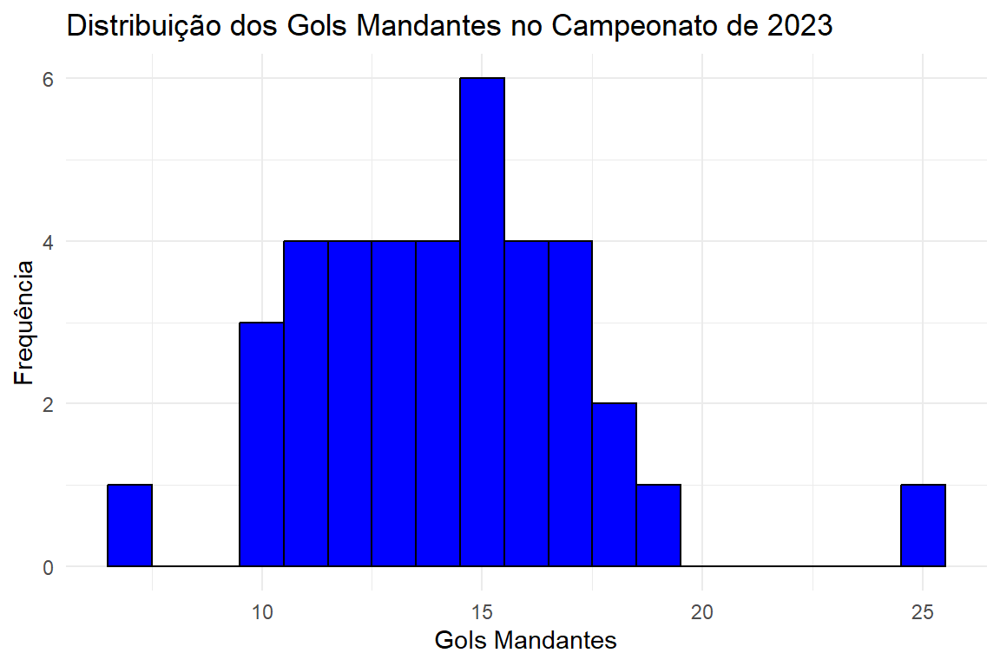
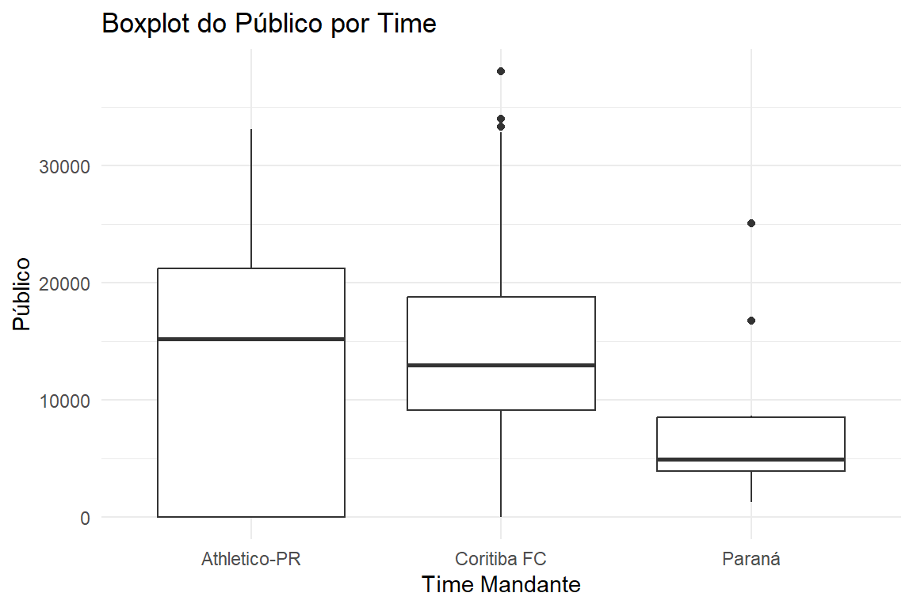
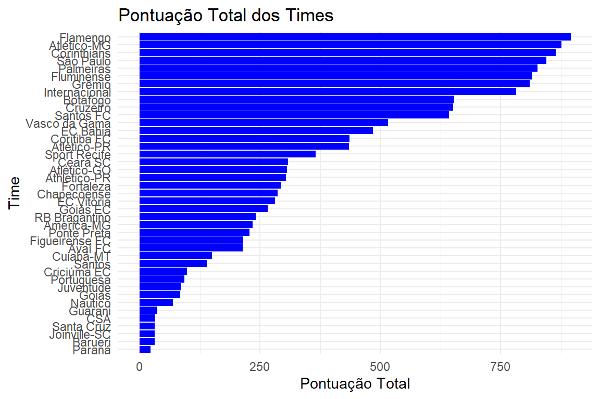

O Histograma exibe a frequência com que diferentes intervalos de valores (conhecidos como “bins”) ocorrem em um conjunto de dados. Cada barra do histograma representa a quantidade de dados que se enquadra em um determinado intervalo, com barras mais altas indicando maior ocorrência de valores naquela faixa.
2.2.1 Utilidade:
Verificação da qualidade dos dados: Histograma ajuda a identificar se há concentrações inesperadas ou valores atípicos (outliers) em certas faixas de dados.
Comparação de distribuições entre grupos: Comparar como diferentes grupos (por exemplo, times, rodadas) se distribuem em termos de variáveis como gols ou público.
2.2.2 Exemplo de Aplicação:
Ao gerar um histograma para o número de gols marcados por rodada, você pode visualizar quantas vezes um time marcou dentro de um intervalo de valores, como entre 0 e 5 gols, permitindo identificar a frequência dos resultados mais comuns.
Agora, vou criar um histograma para ilustrar esse conceito.
R
# Carregando bibliotecalibrary(ggplot2)library(tidyverse)FALSE ── Attaching core tidyverse packages ───────────────────── tidyverse 2.0.0 ──FALSE ✔ dplyr 1.1.3 ✔ readr 2.1.4FALSE ✔ forcats 1.0.0 ✔ stringr 1.5.1FALSE ✔ lubridate 1.9.3 ✔ tibble 3.2.1FALSE ✔ purrr 1.0.2 ✔ tidyr 1.3.0FALSE ── Conflicts ─────────────────────────────────────── tidyverse_conflicts() ──FALSE ✖ dplyr::filter() masks stats::filter()FALSE ✖ dplyr::lag() masks stats::lag()FALSE ℹ Use the conflicted package (<http://conflicted.r-lib.org/>) to force all conflicts to become errors# dados do histogramahistograma <- dados %>%filter(ano_campeonato ==2023) %>%group_by(rodada) %>%summarize(gols_mandante =sum(gols_mandante, na.rm =TRUE) )# Gerando o histogramaggplot(histograma, aes(x = gols_mandante)) +geom_histogram(binwidth =1, fill ="blue", color ="black") +labs(title ="Distribuição dos Gols Mandantes no Campeonato de 2023", x ="Gols Mandantes", y ="Frequência") +theme_minimal()

2.3 Boxplots
O Boxplot exibe a distribuição dos dados com base em um resumo de cinco números. Ele fornece uma visão visual da tendência central dos dados, sua variabilidade e possíveis outliers. Cada boxplot é construído a partir de cinco valores: mínimo, primeiro quartil (Q1), mediana (Q2), terceiro quartil (Q3), e máximo. As “wiskers” (ou extremidades do gráfico) mostram a extensão da variabilidade dos dados, sem incluir os outliers.
2.3.1 Resumo de cinco números:
Mínimo: O menor valor dos dados (desconsiderando outliers).
Primeiro Quartil (Q1): O ponto abaixo do qual 25% dos dados estão localizados.
Mediana (Q2): O valor central dos dados (50% dos dados estão abaixo e 50% acima).
Terceiro Quartil (Q3): O ponto abaixo do qual 75% dos dados estão localizados.
Máximo: O maior valor dos dados (desconsiderando outliers).
As “wiskers” (linhas verticais) mostram o alcance dos dados, enquanto os pontos fora das wiskers são considerados outliers.
2.3.2 Utilidade:
Identificação de outliers: Boxplots são ótimos para identificar valores que estão muito distantes da maioria dos dados.
Distribuição de dados: É possível ver a dispersão dos dados e a presença de qualquer assimetria (skewness) no conjunto de dados.
2.3.3 Exemplo de Aplicação:
Ao gerar um boxplot para o número de gols marcados pelos times, você pode identificar times que têm uma variação de desempenho alta ou jogos com números de gols fora do padrão.
R
# Carregando bibliotecalibrary(ggplot2)library(tidyverse)# Criando o dataframeboxplot<-dados%>%filter(time_mandante%in%c("Coritiba FC", "Athletico-PR", "Paraná"))# Gerar o boxplotggplot(boxplot, aes(x =time_mandante, y =publico))+geom_boxplot()+# geom_boxplot(fill = "lightblue", color = "black") +labs(title ="Boxplot do Público por Time", x ="Time Mandante", y ="Público")+theme_minimal()

2.4 Gráfico Scatterplot
R
library(ggplot2)library(tidyverse)dados_rodada <- dados %>%group_by(rodada) %>%summarize(media=mean(gols_mandante, na.rm =TRUE))dados_time <- dados %>%group_by(rodada, time_mandante) %>%summarize(media=mean(gols_mandante, na.rm =TRUE))FALSE`summarise()` has grouped output by 'rodada'. You can override using theFALSE`.groups` argument.dados_rodada %>%ggplot(aes(x=rodada,y=media))+geom_point()dados_time %>%ggplot(aes(x=rodada,y=media))+geom_point()
2.5 Passo 1: Definir a Pontuação de Mandantes e Visitantes
Primeiro, calcularemos a pontuação para o time mandante e o time visitante de acordo com o resultado da partida.
2.5.1 1.1 Adicionar Pontuação dos Mandantes e Visitantes
R
# Adicionar a pontuação para o time mandante e visitantedados_pontos<-dados%>%mutate( pontos_mandante =case_when(gols_mandante>gols_visitante~3, # Vitória do mandantegols_mandante==gols_visitante~1, # EmpateTRUE~0# Derrota do mandante), pontos_visitante =case_when(gols_visitante>gols_mandante~3, # Vitória do visitantegols_visitante==gols_mandante~1, # EmpateTRUE~0# Derrota do visitante))
2.6 Passo 2: Criar a Tabela de Pontuação dos Times
Agora que temos a pontuação de cada partida, podemos calcular a pontuação total para cada time, considerando tanto as partidas como mandante quanto como visitante.
2.6.1 2.1 Unir as Pontuações de Mandante e Visitante
Vamos criar uma tabela única que combine as pontuações de times mandantes e visitantes.
R
# Criar uma tabela com a pontuação dos times como mandantepontos_mandante <- dados_pontos %>%group_by(time_mandante) %>%summarise(pontos_mandante =sum(pontos_mandante),jogos_mandante =n() ) %>%rename(time = time_mandante)# Criar uma tabela com a pontuação dos times como visitantepontos_visitante <- dados_pontos %>%group_by(time_visitante) %>%summarise(pontos_visitante =sum(pontos_visitante),jogos_visitante =n() ) %>%rename(time = time_visitante)# Unir as tabelas de pontuação de mandante e visitantepontuacao_total <- pontos_mandante %>%full_join(pontos_visitante, by ="time") %>%mutate(pontos_totais = pontos_mandante + pontos_visitante,jogos_totais = jogos_mandante + jogos_visitante ) %>%arrange(pontos_totais)# Visualizar a tabela de pontuação totalprint(pontuacao_total)FALSE# A tibble: 41 × 7FALSE time pontos_mandante jogos_mandante pontos_visitanteFALSE<chr><dbl><int><dbl>FALSE1 Paraná 19194FALSE2 Barueri 201911FALSE3 Joinville-SC 25196FALSE4 Santa Cruz 23198FALSE5 CSA 23199FALSE6 Guarani 30197FALSE# ℹ 35 more rowsFALSE# ℹ 3 more variables: jogos_visitante <int>, pontos_totais <dbl>, …
2.7 Passo 3: Exibir o Gráfico de Pontuação dos Times
2.7.1 Agora podemos criar um gráfico de barras mostrando a pontuação total de cada time.
R
# Criar gráfico de barras da pontuação total dos timesggplot(pontuacao_total, aes(x =reorder(time, pontos_totais), y =pontos_totais))+geom_bar(stat ="identity", fill ="blue")+coord_flip()+labs(title ="Pontuação Total dos Times", x ="Time", y ="Pontuação Total")+theme_minimal()

R
# Definir as cores para os times específicoscores_times<-c("Paraná"="#0033A0", "Coritiba FC"="#008000", "Athletico-PR"="#FF0000")# Criar gráfico de barras com cores personalizadas para Paraná, Coritiba e Athletico-PRggplot(pontuacao_total, aes(x =reorder(time, pontos_totais), y =pontos_totais, fill =time))+geom_bar(stat ="identity")+scale_fill_manual(values =cores_times, na.value ="grey")+# Coloca cinza para times não especificadoscoord_flip()+labs(title ="Pontuação Total dos Times", x ="Time", y ="Pontuação Total")+theme_minimal()
Você precisa somar os gols para cada time mandandte ao longo das rodadas e criar uma coluna cumulativa que contabilize a evolução dos gols marcados ao longo do tempo.
R
library(dplyr)# Agrupar e calcular a soma dos gols por ano e time mandantedados_gols <- dados %>%group_by(ano_campeonato, time_mandante) %>%summarise(gols_mandante =sum(gols_mandante, na.rm =TRUE)) %>%arrange(ano_campeonato)FALSE`summarise()` has grouped output by 'ano_campeonato'. You can override usingFALSE the `.groups` argument.# Criar uma pontuação cumulativa para acompanhar a evolução dos gols por timedados_gols <- dados_gols %>%group_by(time_mandante) %>%mutate(gols_acumulados =cumsum(gols_mandante)) %>%ungroup()# Agrupar por ano e criar a classificação dos 10 primeirosdados_gols <- dados_gols %>%group_by(ano_campeonato) %>%mutate(rank =rank(-gols_acumulados, ties.method ="first"), gols_rel = gols_acumulados /max(gols_acumulados)) %>%filter(rank <=10) %>%ungroup()
Criar o gráfico animado com gganimate
Agora, vamos criar o gráfico de barras animado que mostra a evolução rodada por rodada dos 10 maiores goleadores.
R
library(gganimate)grafico_animado<-ggplot(dados_gols,aes( x =rank, y =gols_acumulados, group =time_mandante, fill =time_mandante))+geom_col(width =0.8, color ="black")+theme_minimal()+geom_text(aes(y =0, label =paste(time_mandante, " ")), vjust =0.2, hjust =1)+geom_text(aes(y =gols_acumulados, label =round(gols_acumulados, 1), hjust =-0.1))+coord_flip(clip ="off", expand =FALSE)+scale_x_reverse()+guides(color =FALSE, fill =FALSE)+theme( axis.title.y =element_blank(), legend.position ="none", plot.title =element_text(size =20, hjust =0, face ="bold"), plot.background =element_blank(), plot.margin =margin(0, 2, 0, 3, "cm"))+labs(title ='{closest_state}', x =" ", y ="Gols Acumulados")+transition_states(ano_campeonato, transition_length =16, state_length =4)+view_follow(fixed_x =TRUE)# Rodar a animaçãoanimate(grafico_animado, nframes =300, fps =20)
Salvar a animação Você pode salvar a animação em formato de vídeo ou GIF: